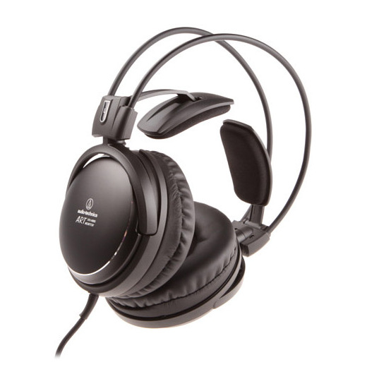

Audio-Technica ATH-A900X

Описание товара
- Аудиофильские наушники с алюминиевым корпусом
- Большие 53-мм драйверы для высококачественного звука
- Закрытая конструкция с системой демпфирования Double Air для глубокого баса
- Звуковая катушка с CCAW обмоткой
- Вибростойкое саморегулирующееся оголовье 3D Wing Support Housing обеспечивает комфортную посадку
- Чрезвычайно удобные крупные и мягкие амбушюры
- Высококачественный OFC-кабель (бескислородная медь) в прочной тканевой оплетке
- Сделано в Японии
Характеристики товара
-
Внешний вид и конструкция
- Прилегание к ушам Охватывающие
- Основной Цвет Чёрный
- Материал амбушюр Кожаные
- Складные нет
-
Акустические характеристики
- Тип звукоизлучателя Динамический
- Тип наушников Закрытые
- Частотный диапазон 5 — 40000 Гц
- Чувствительность 100 дБ
- Сопротивление 42 Ом
-
Проводное подключение
- Наличие провода Проводные
- Съемный кабель нет
- Штекер Джек 3.5 + переходник 6.3 мм
- Тип кабеля Прямой односторонний
- Метраж кабеля 3 м
-
Функции и управление
- Шумоизоляция С частичной шумоизоляцией
- Активная компенсация шумов Нет
-
Дополнительная информация
- Вес 290
- Назначение Для дома
Подробное описание товара
Закрытые динамические наушники ATH-A900X — это обновлённая версия модели ATH-A900. Эти наушники Audio-Technica имеют акустические характеристики аудиофильского уровня с превосходным глубоким басом и передачей вокала, не имеющей равных в своем классе. Hi-Fi звучание достигается за счет крупных 53-мм драйверов и системы демпфирования Double Air. Наушники оснащены инновационным саморегулирующимся оголовьем, которое гарантирует Вам долгие часы удивительно комфортного прослушивания.
Комплект поставки
Наушники Audio-Technica ATH-A900X
Адаптер 6,3 мм
Все права защищены ©